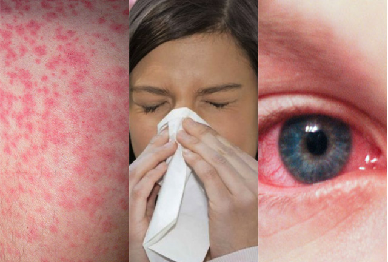

Una alergia es una reacción de su sistema inmunitario hacia algo que no molesta a la mayoría de las demás personas. Quienes tienen alergias suelen ser sensibles a más de una cosa. Las sustancias que suelen causar reacciones son:
Normalmente, su sistema inmunitario combate los gérmenes. Es el sistema de defensa de su cuerpo. Sin embargo, en la mayoría de las reacciones alérgicas responde a una falsa alarma. Los genes y el medio ambiente probablemente tienen un rol en las alergias.
Las alergias pueden provocar una serie de síntomas como goteos nasales, estornudos, picazón, sarpullidos, edema (hinchazón) o asma. Las alergias van de leves a severas. Una reacción severa llamada anafilaxia puede resultar fatal. Los médicos usan pruebas de piel y sangre para diagnosticar las alergias. Los tratamientos incluyen medicinas, inyecciones y evitar las sustancias que causan las alergias.
Existen varias pruebas que permiten detectar alergias:
Existen varios tratamientos y terapias para ayudar a prevenir las alergias. Principalmente se emplean fármacos antihistamínicos, los cuales reducen sus síntomes. No obstante, ciertas alergias como las alimenticias, son más complejas por lo que será necesario llevar un dieta equilibrada en la que se excluyan aquellos alimentos que provoquen la alergia. Si por alguna causa el paciente ingiere un alimento de este tipo, lo más recomendable es acudir al hospital lo antes posible o si dispone de una jeringuilla con adrenalina, inyectarla. Esto dará tiempo al paciente antes de sufrir un shock, aunque en todo caso, tras su inyección deberá trasladar al paciente al hospital más cercano.
Para más información, consulte el siguiente vídeo:
Marta Nadal Herraiz y Jazmín Ramírez Agudelo
©Copyright. Todos los derechos reservados. 2022
Puedes volver a la página principal, haciendo click en logo o a través del siguiente enlace:aquí
También le puede interesar: UAlicante